带XML去旅行之日本（上）
每一个樱花树下的灵魂都应被祝福。 ——HML
这次旅行是我们有史以来，估计也将是至此以后，最长的一次了，安排了13天，主要是因为婚假加清明足足18天。假期多了，就是这么任性，哈哈！考虑到是婚假，我们一开始心很大，把整个地球都规划了一遍，从欧洲到大洋洲，从北欧6国道澳洲新西兰，好像不出个亚洲对不起自己一样。墨迹墨迹最后就墨迹到了2月份，不得不下决定了。我和我家李笨笨考虑了各个因素，从体力到消费，又从行程缓急到喜好程度，最后居然拍板了个日本，哈！哈！哈！哈！我们果然是两只笨笨！事实证明，去日本玩全本州根本用不了这么久。
行程概要
- 4.4 杭州 — 浦东国际机场 （上海空港海航酒店）
- 4.5 成田机场 — 东京田町（ Hotel JAL City Tamachi Tokyo (东京田町日航城市酒店)）— 明治神宫 — 新宿/新宿御苑 、歌舞伎一条街— 东京塔
- 4.6 田町 — 河口湖 （Mizuno Hotel (水之家酒店)） — 各种看富士山
- 4.7 河口湖 — 新横滨 （Lagunasuite Shinyokohama (新横滨拉古纳套房酒店)）— 拉面博物馆 、江边樱花大道 — 镰仓高校 — 附近瞎转悠或者回横滨瞎转悠
- 4.8 - 4.10 新横滨 — 新干线 — 大阪/谷町四丁目 （APA Hotel Osaka-Tanimachi (大阪谷町APA酒店) — 大阪城 天守阁 — 道顿崛心斋桥 — 四天王寺 — 新世界商业街&通天塔 ）
- 4.10 谷町四丁目 — 奈良/新大宫 （Super Hotel Lohas JR Nara Eki ）— 奈良公园、奈良町、春日大社、奈良小街小巷等
- 4.11 - 4.13 新大宫 — 京都站/（Villa Court Karasuma Nanajo - Guest House In Kyoto(京都别墅苑乌丸七条公寓) ）— 东本愿寺、西本愿寺、二条城、伏见稻荷大社（千本鸟居）、清水寺（穿和服）、金阁寺、岚山、衹园
- 4.14 - 4.17 京都站 — 新干线 — （三越前Smile Hotel Nihombashi Mitsukoshimae (日本桥三越前微笑酒店)） — 浅草寺、靖国神社、银座、涉谷、秋叶原 、早稻田大学 — 迪斯尼
以上是李笨笨花了好多心血和时间整理的行程，我只是在一边起哄顺便拍个版（嘿嘿，谁叫咱家大事我做主呢），我们的整体行程大概就是按照这个走的，只有些微的调整。不过李笨笨的心血一度因为大阪的酒店被我全盘否定，为此他很是伤心，事后想想不应该怪他，这也算是两个人相处磨合的过程嘛，他只能认栽。
上海
事实证明，先买机票再定行程的做法是极其错误的！是极其错误的！是极其错误的！重要的事情说三遍，尤其是去日本这种国家。由于没有限定行程，在携程上抢了特价机票，东京进出，导致我们从关东到关西来回坐了两趟新干线，人均浪费800。其次机票选的是从浦东飞浦东降，也是脑残了，导致我们要提前一天到上海机场附近住一晚，真是很麻烦，浪费时间精力。两个傻帽在火车东站就开始嗨了。
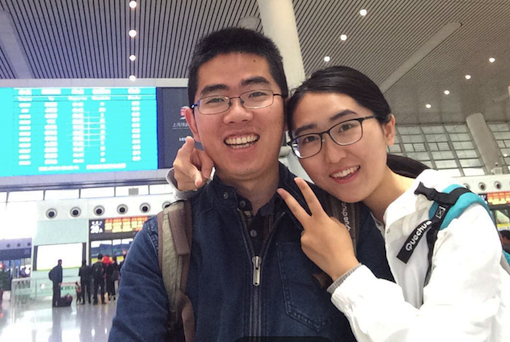
4号中午到浦东，由于时间还早而xml又没有去过世博园，所以李笨笨就带xml去了世博园来开开眼。
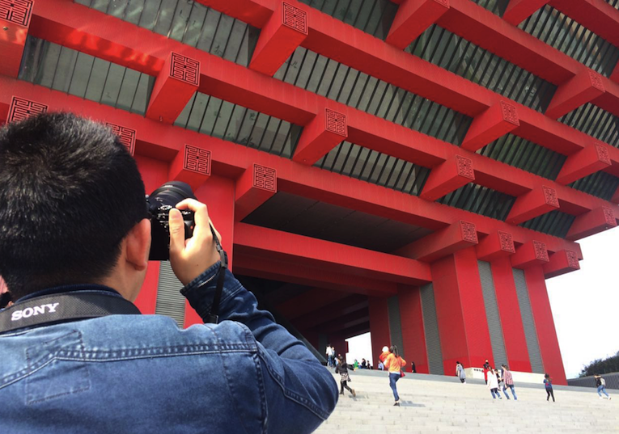
逛完中国馆，去体验大上海的地下交通，不仅做了地铁还体验了磁悬浮。不知道为什么，每次做快速火车总是很开心。
空港酒店我要给个8分，环境不错，关键是运气够好的话可以看到夕阳里起飞的空机。
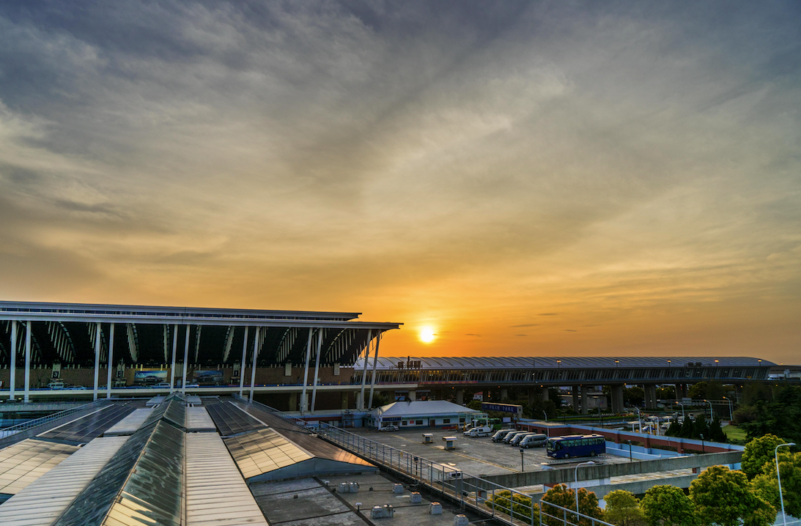
东京
5号一早，在兴奋中准时登机，起飞太阳国。大约下午2点左右抵达东京成田机场。虽然之前做过不少攻略，中文字在日本也半猜半认能知道大意，但还是对迎面扑来的地名文字懵逼了。真是给我的日文老师丢脸啊，想从机场去东京市区问了两个人终于找到了之前攻略计划坐的地铁——JR skyliner 。匆忙中把钱包拉在了问询台，要不是工作人员追上来，我这就是出师不利了。瞬间有满满的幸福感。然而，我们还是捡了一辆车上后摇晃了将近2小时才到市区，原本1小时不到的路程因为我们做错了车而拉长不少，去日本的小伙伴可要看清skyliner和特急线不是同一种，当然skyliner也要贵不少。同时，樱花季的太阳国——真的很美。还有，日本强大的轨道交通和上下班齐刷刷西装领带公文包皮鞋挤地铁的上班族。仪式感扑面而来。
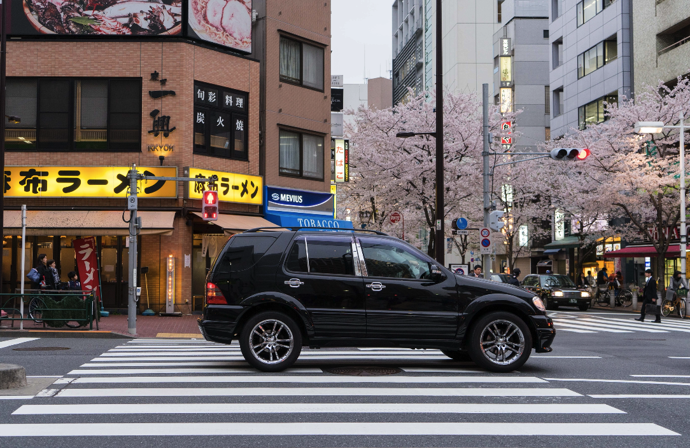
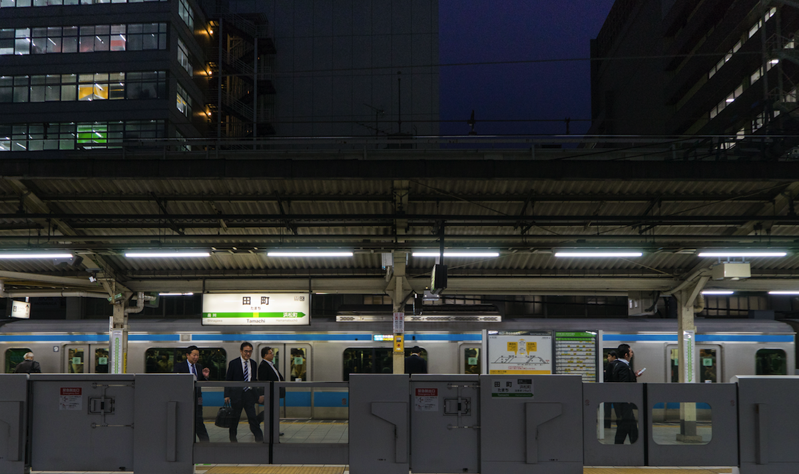
入住日本的第一家酒店，虽然价格是国内同类酒店的至少翻番且空间狭小，但真的是做到了麻雀虽小五脏俱全。酒店使用的都是资生堂的洗漱用具，最有心的就是智能马桶垫了。我给这个酒店打8分。
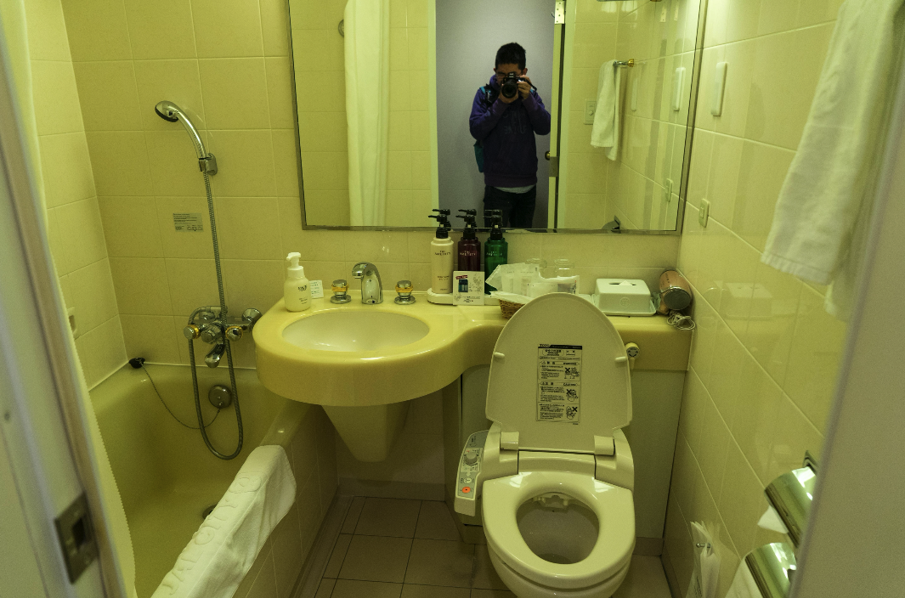
歌舞伎町不值一提，唯一感受到的是7、8点这一代依然如潮水般过马路的日本上班族的夜生活刚刚开始。倒是这穿城而过的地铁挺有意思，我只在重庆看到过。
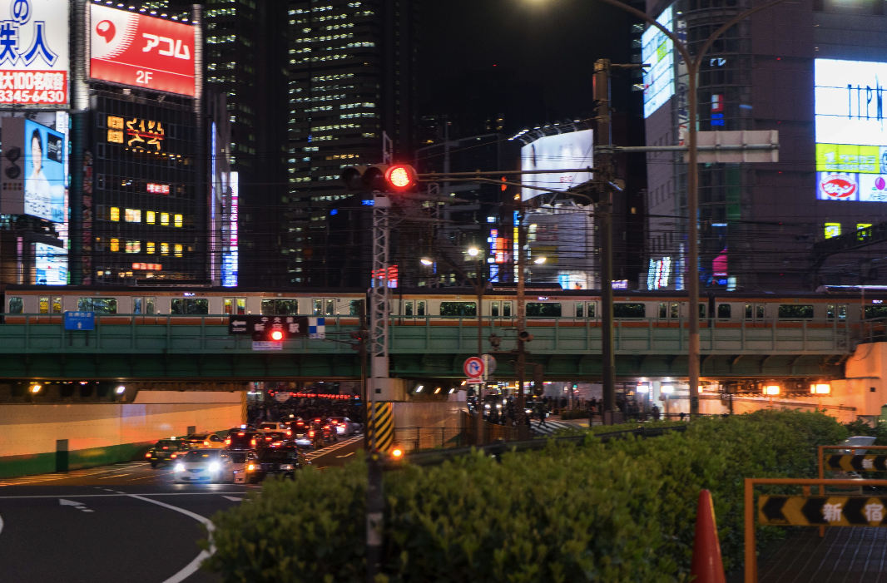
日本印象一
上班族的迁徙运动。第一天到东京，尤其是住的地方田町，是个类似高新区的地方，上班族特别多，他们似乎完全依赖轨道交通，每天下班要拎包走上几百米甚至几公里如候鸟迁徙一般的黑压压一片涌向地铁站，早上上班自地铁站向四周涌出。他们无一不着洋装（日语：西装）打领带，皮鞋锃光瓦亮，男人脸上多少疲惫，女人脸上妆容依然精致，地铁内极少出声、极少交谈，尽管今年来便携电话广泛使用，仍有不少日本人在电铁内看书阅读。
瞧瞧下面这皮鞋：
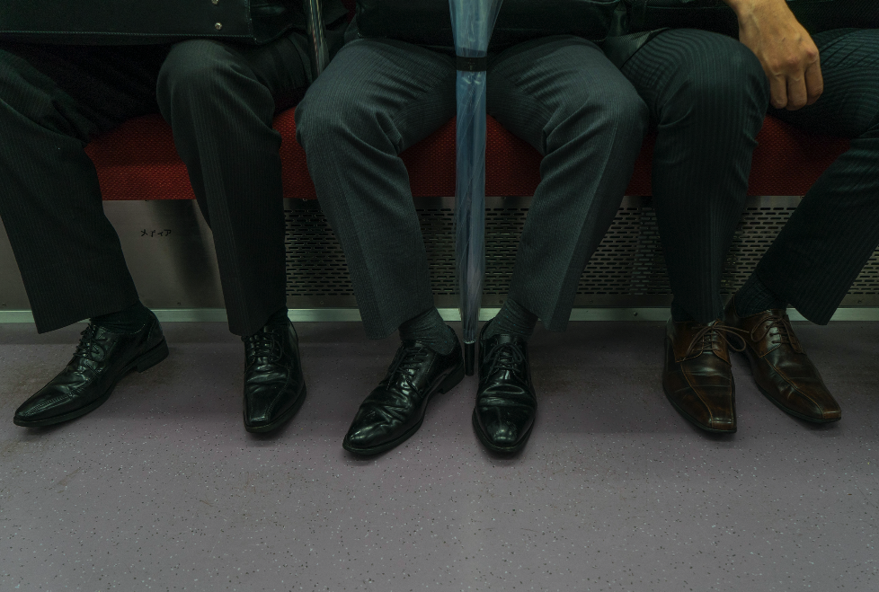
运气好，东京塔就在酒店附近，趁着夜未深，开启了游客模式。樱花里的东京塔：
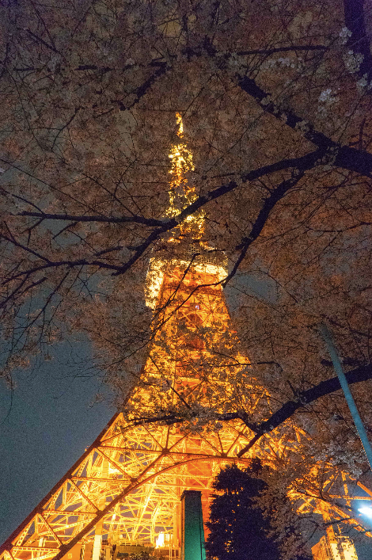
东京塔瞭望台眼内的东京全景，我只能说相机永远都记录不下眼睛所能看到的一切：
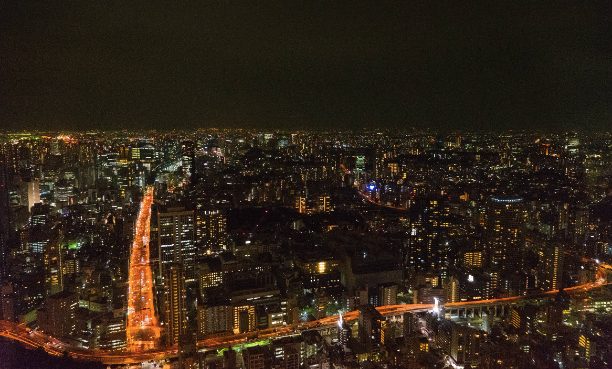
我这个麻豆是不是很敬业，用你的镜头充当岁月的翻录机：
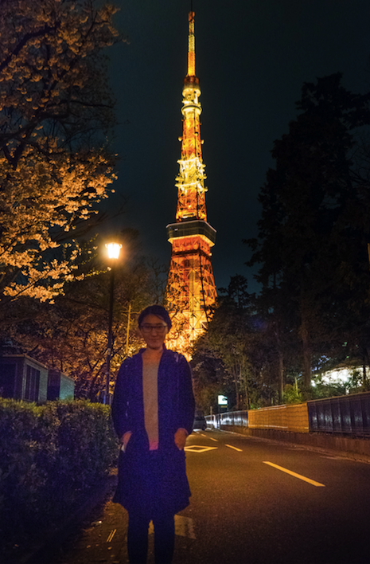
和很多人一样，没来之前就一心想要循着孤独的美食家大叔的脚步去街头巷尾寻找家庭料理。找到一家很对眼的，可惜这家主人不会中文或者英文又对我们蹩脚到家的日语不感冒更加似乎有点讨厌中国人的样子，只能退而且其次，找了另一家。塞翁失马，这一家店家是个日本大叔，服务员是来自苏州在日本打工的大婶，和我们渐渐聊得热络，点了他家的刺身拼盘和清酒，他还送了我们半条多线鱼。大叔苦口婆心，让我们小心日本的中国人，真不知道作何感想。倒是一段珍贵的回忆，可惜少了合影。
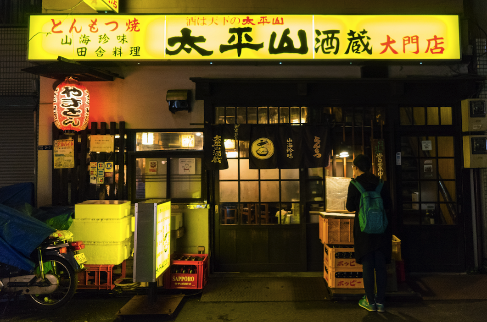
第二天一早前往新宿御苑，一个适合出写真的地方。尽管有人很多，但，阳光很好，心情很美丽。
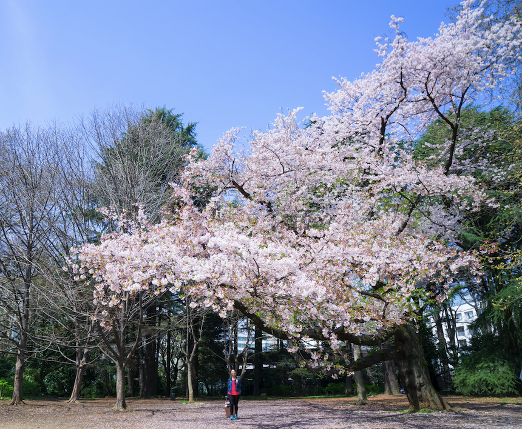
出发河口湖，那座像涂了奶油被人咬掉一口的富士山，我们来了。
富士山
去之前一直担心下雨看不到富士山，事实上天公还是做了一回美，小幸运。从新宿坐长途大巴前往富士山，可以坐到河口湖，从河口湖的角度可以看到全景，当然你得选一个视角较好的位置。售票机有可能已经售完，没有关系，去人工窗口服务人员会帮忙安排，只要不是运气太背，都是可以如愿的。大巴大约1个多小时就能抵达河口湖了。一路拖着行李箱，我们来到了酒店的合适小屋。
这是我最喜欢的一家酒店，我给打9.5分，酒店正对富士山，温泉泡汤。
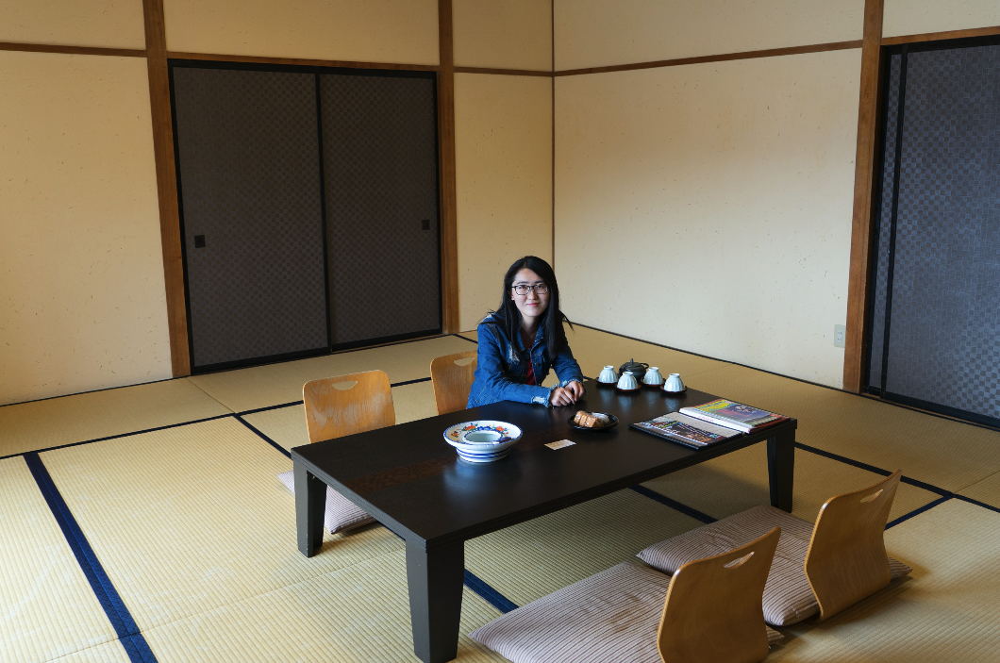
远山眉黛
这张图尽管美中不足，是因为温度导致樱花未满，但也正因此变得独一无二。
我觉得富士山可以出一个特辑，就叫“小幸运”，怎么样？
富士山景区较少餐饮，多是酒店自带，以下是为数不多的日式饭厅，吃食无非是定食之类的，味道也是一般。倒是酒店自带的合式早餐，满满的用心，满足了口腹之欲的同时也是视觉的享受。
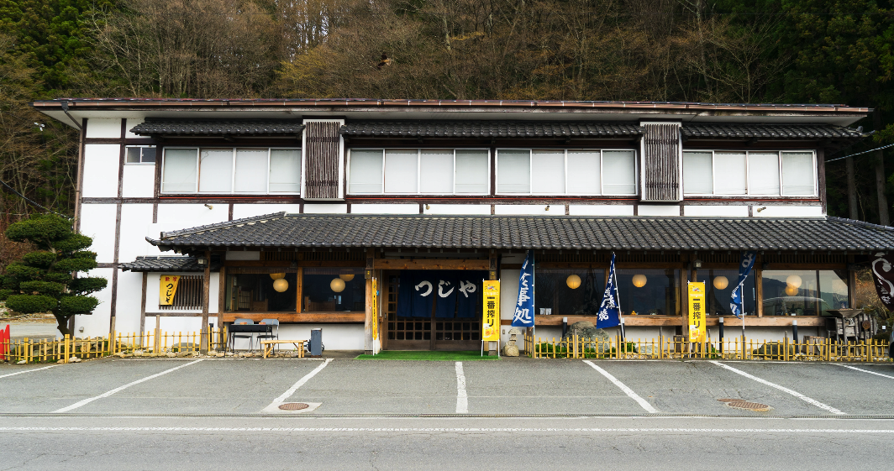
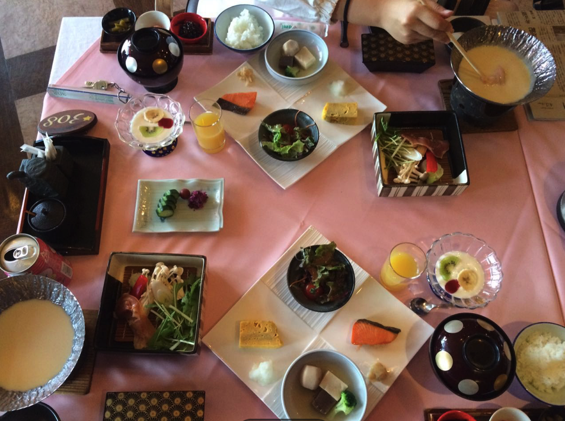
日本印象二
日本的高速公路两边很少看到大片的无人山区，即使是在大片的田野间，仍有密集的住宅，人口密度很大。大多日式小屋最高2层，宽宽大大矮矮方方但是极宽敞，各家院子屋后都是盛开的樱花，不由想到我们的农村，风景却没这般好。日本车90%丰田，剩下的也是本田、尼桑分去一杯羹，极少见他国车，很少见到国内的三大车。日本车从形态上也是能小则小，一般的类似面包车的小车都做得方方正正连前面的车头都削去，方便他们在大街小巷穿梭自如又省油，我们称他们小方车。
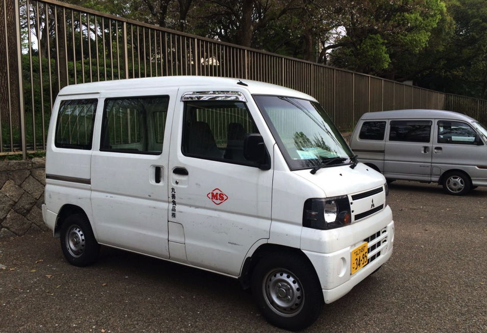
横滨
由于去往大阪需要乘坐新干线，且最近需在横滨乘坐，所以我们安排了一天在横滨，顺便去看看slum dunk。富士山的第二天早晨下着小雨，我们坐上开往横滨的大巴。
横滨的酒店相对于东京来说价格相差不大，服务更周到一些，可惜只住一晚，出门就是全家，走两步又有7-11，走几百米就是新横滨站，很是便利。要打个8.5分。
横滨算是东京的附属市，但更靠近海，对横滨的印象源于大学时的日语老师，他来自神奈川县横滨市。神田老师一看就看得出是个日本人，有着一头柔顺的亮发不短，但很干净。问他为用的什么洗发水，他总说“花王啊，用花王就是这样自信”。他说话慢慢的，他教我们念“よこはま”（日文：横滨市）。对他的印象止于此了。
横滨的湿度很大，海风很强，以至于我们刚下地铁，就被海风吹蒙了。发现好多女士都穿着国内也流行的长款风衣，几乎是人手一件。猜测也许这才是风衣流行起来的原因，在横滨真的需要它来挡风啊。
酒店附近不知名的樱花大道，好想一直美下去。
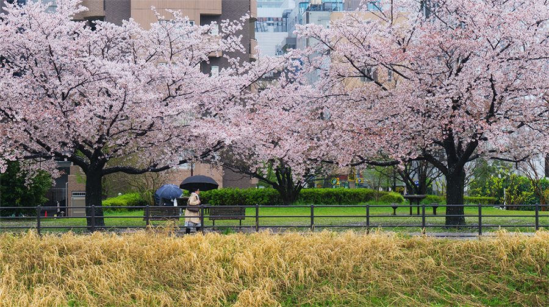
发现了小心机没有
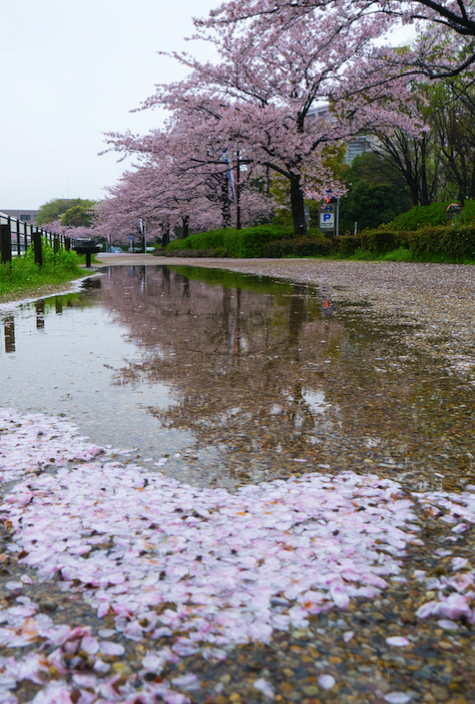
樱花是少女心
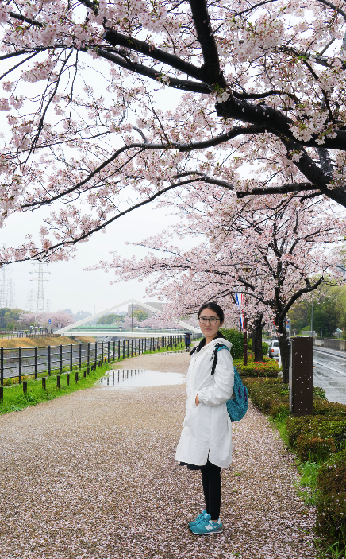
日本的拉面文化源于中国，但发扬出了自己的特色，在横滨悠哉晃去拉面博物馆也算是涨了小知识，原来日本也有那么多种类的拉面，各个县市喜好不一，也是挺有意思的。
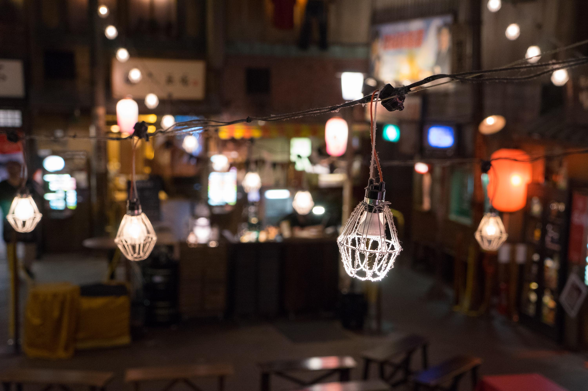
追随年少时的热情，去看一眼樱木花道曾经战斗过的地方——我们倒了3班地铁，寒风中颤抖着来到了镰仓高校，还在那个标志性的地方摆了POSE留了年也是不枉此行了。遇到一位大哥更拼，穿着樱木的球衣寻梦来了。据说这可是游客排长队的取景点。
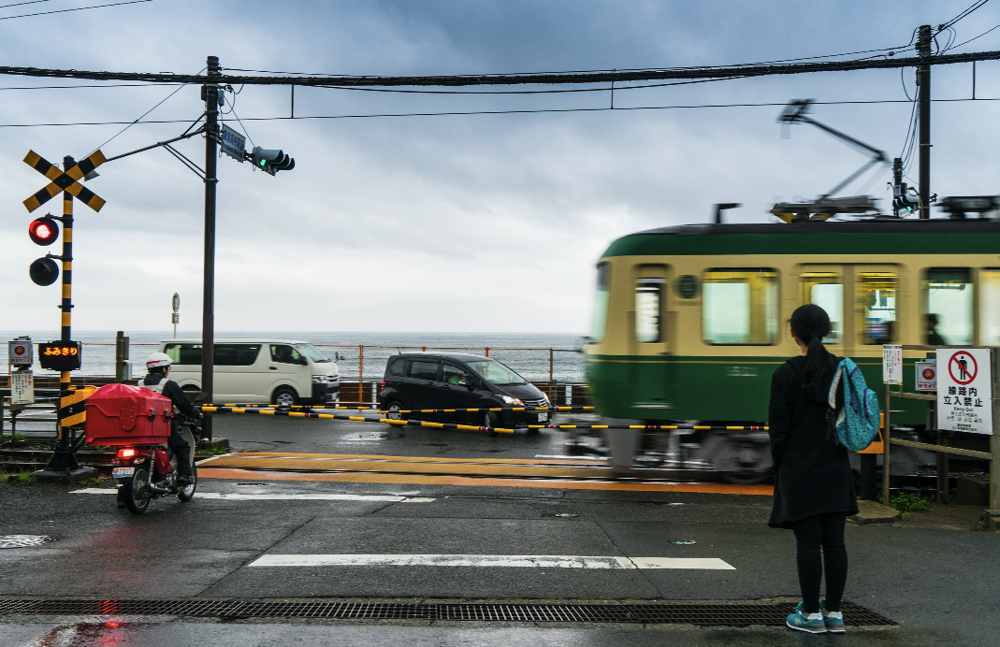
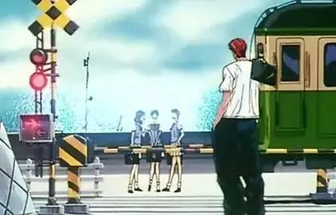
晚上回到横滨，休息一晚，明天将要向关西进发了！